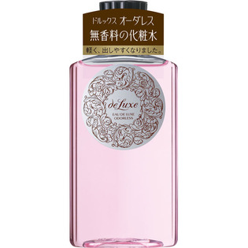

返回列表
产品名称：ドルックスオーダレス オードルックス

資生堂 ドルックスオーダレス オードルックス １５０ｍｌ
メーカー 資生堂
JANコード 4901872241422
商品の特徴
肌をしなやかにする無香料の化粧水
おだやかな感触でうるおいを与え、肌をしなやかにする。
成分・分量
-
用法及び用量
・乳液のあと、手のひらまたはコットンにティースプーン2/3杯をとり、軽くたたくようにして肌になじませます。